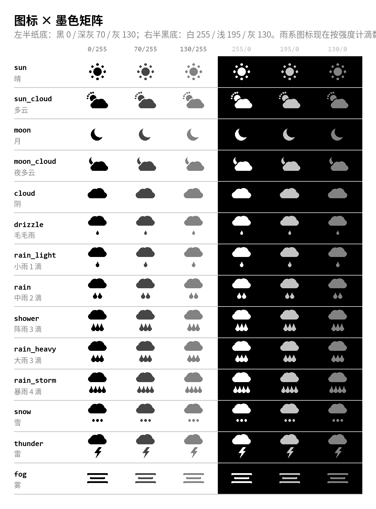
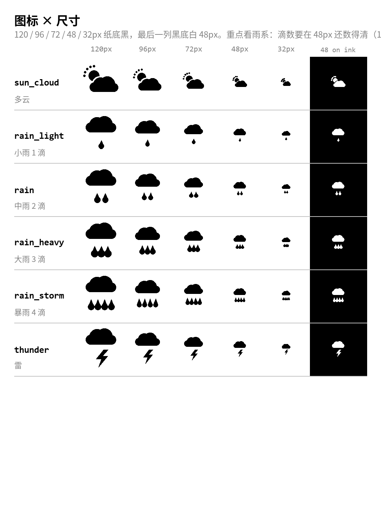
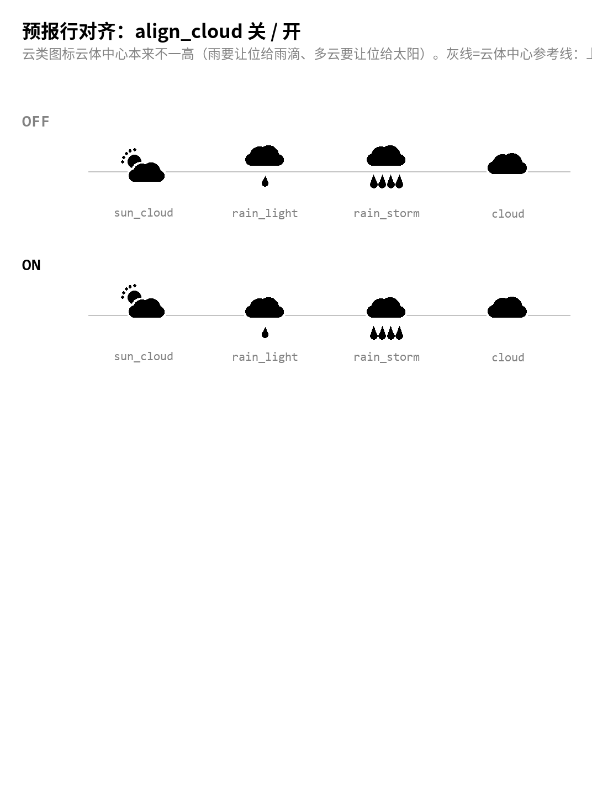

图标-灰阶

14 种天气 × 6 种墨色。看反相和浅灰那两列有没有糊掉的。
图标-尺寸

尺寸下限审查：32px 起雨滴/雷开始并笔，生产里最小用到 40px（预报小行）。
图标-对齐

align_cloud 关/开对照：灰线是云体中心，开的那排四朵云齐平。
图标-灰底

版面已经有两种非纸底：昨天格 130 灰、今天格黑。灰底上可用的是纯黑和纯白，130 前景在 130 底上直接消失 —— 所以昨天格的图标一律用黑。
图标-线稿

ARC 信息终端选用的线稿一套：14 种天气 × 纸/黑/130 灰三种底。落选的冲压实心和点阵已归档。